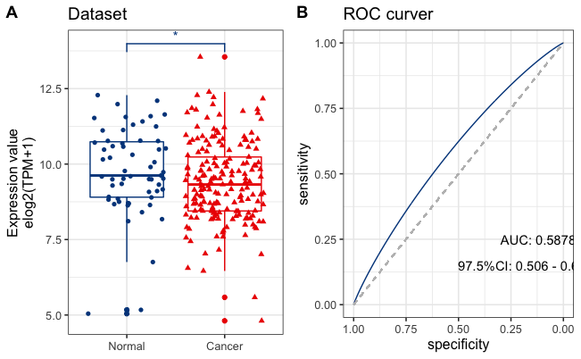

接下来是ROC曲线的构建,需要用到
接下来是ROC曲线的构建,需要用到pROC library(readr)
data<- read.csv("content/post/2020-08-16-roc/data.csv")
knitr::kable(data)| Type | value |
|---|---|
| Cancer | 10.005625 |
| Cancer | 7.851749 |
| Cancer | 10.030667 |
| Cancer | 10.79604 |
| Cancer | 9.805744 |
| Normal | 10.210671 |
| Normal | 9.319673 |
| Normal | 8.9128895 |
| Normal | 9.3442955 |
| Normal | 11.58684 |
| Normal | 8.672425 |
| Normal | 10.518653 |
| Normal | 9.902375 |
首先是boxplot,可以用ggplot2作图,ggsignif进行统计,然后ggsci配色,由于默认的X轴排序是按英文来的,如果想固定一个顺序排序,可以把X轴的变量设置为因子,然后定义先后顺序
data<- within(data, Type <- factor(Type, levels = c("Normal", "Cancer")))
shapiro.test(data$value) # 首先进行正态检验
# Shapiro-Wilk normality test
#
#data: data$value
#W = 0.98318, p-value = 0.005502非参数检验,如果大于0.5就改用t.test library(ggplot2)
library(ggsignif)
library(ggsci)
p1<-ggplot(data,aes(x=Type,y=value,color=Type,shape=Type))+ #X轴为类型,Y轴为数值,按类型填色,按类型分形状
geom_boxplot()+geom_jitter()+#加柱状图,加点
theme_bw(base_size = 12)+#背景和字体大学
theme(legend.position = 'none')+#去掉标签
ggtitle("Dataset")+xlab(NULL)+#添加标题,去掉X轴
ylab("Expression value\nelog2(TPM+1)")+ #\n表示下一行
scale_color_lancet()+#lancet配色
geom_signif(comparisons = list(c("Normal","Cancer")),map_signif_level = T,textsize = 4)#显著标识
p1
接下来是ROC曲线的构建,需要用到pROC
# library(pROC)
roc<-roc(data$Type,data$value,ci=TRUE, smooth = TRUE) #进行roc计算,然后做曲线处理
roc$ci # 只有2.5,50和97.5%的置信区间,不是95%
# 95% CI: 0.506-0.672 (2000 stratified bootstrap replicates)
roc$auc #曲线下面积,一般大于0.5最好
# Area under the curve: 0.5878 p2<-ggroc(roc,color="#00468B")+ggtitle("ROC curver")+
theme_bw(base_size = 12)+
geom_segment(aes(x = 1, xend = 0, y = 0, yend = 1), color="grey",linetype="dashed")+
ggplot2::annotate('text',x=0.12,y=0.25,label=paste("AUC:",round(roc$auc,4)))+ # 提取ACU结果,四位小数点
ggplot2::annotate('text',x=0.18,y=0.15,label=paste("97.5%CI:",round(roc$ci[1],4),"-",round(roc$ci[3],4)))# 提取97.5%结果,四位小数点
p2
cowplot::plot_grid(p1,p2,labels = "AUTO")